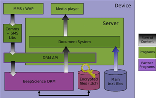

| Home · All Classes · Grouped Classes · Annotated · Functions |
Files and content subject to DRM are transparently browsed, launched, moved, deleted and examined for their properties, in the same way as other files. Additionally DRM rights are able to be viewed as part of the properties of a file. Icons have an adornment to indicate that, in addition to their mime-type, the file is a DRM controlled file.
DRM integration requires that:
The DRM architecture is shown in the following diagram:

Constraints may be placed on the rendering of DRM content restricting thing such as the number of times and the time in which the content may be rendered so in order to comply with these constraints there are some additional steps that must be when rendering protected content.
First to acquire access to a DRM protected file a license must be requested using the QDrmContent class, if there are current rights for the file a license will be granted immediately, if not the user may be prompted to download a license or visit a web site. Once a license has been granted the plain-text content of DRM protected files may be accessed using the standard Qt file API or the file access methods of QContent. When access is to the file is no longer required the license should be released which will prevent any further access to the content.
Once a license has been granted and file access is available it is necessary to update the constraints of the protected file as it is rendered. This is performed using calls to QDrmContent::renderStarted(), QDrmContent::renderPaused(), and QDrmContent::renderStopped() on the QDrmContent instance the license for the file was requested from. The agent will time these calls and count the number of times rendering is started and update the constraints. If rights to the file expire while it is being rendered QDrmContent will emit a rights expired signal notifying the application it should release its license and stop rendering the content.
Received DRM files may be content files, or rights objects or triggers. DRM content files is saved to the file system and registered with the document system like any other content. The preferred method of saving content is to construct a new QContent and assign it the name and type of the received file and then write the file to the QContent using either the QContent::save() or by opening a write only QIODevice using QContent::open() and writing to it. If the IO device is used it is important to commit the QContent after closing the IO device to ensure the QContent is saved.
If the file is rights object or trigger it shouldn't be saved to the file system, instead a Qtopia Data Sharing (QDS) service which handles the type of the file should be invoked. File types that should be handled in this manner can be identified by performing a search for a service with the request type that of the recieved file, no response type and the attribute 'handle', the 'drm' attribute may also optionally be used to only invoke services for DRM file types.
The example below checks for a service which handle the mime type of received data and invokes it if found, if not found it saves the data and invokes the default application for handling it.
void receive( const QString &name, const QString &type, const QByteArray &data )
{
// First check if the mime type is handled by a QDS service.
QDSServices services( type, QString(), QStringList() << "handle" );
if( !services.isEmpty() )
{
QDSServiceInfo service = services.first();
QDSAction action( service );
action.exec( QDSData( data, QMimeType( type ) ) );
}
else // Not handled by a QDS service so save to the file system and open in the default application.
{
QContent content;
content.setName( name );
content.setType( type );
content.save( data );
content.commit(); // Not really necessary in this case as save() will call commit() after writing the data.
content.execute();
}
}
Some DRM format such as OMA DRM messages need to be converted to a localised format when they are received, the Qtopia document system will perform this automatically when the data is saved to the file system using QContent. If an application does not intend to save the received data directly to the file system for whatever reason QDS services are provided to convert the data to the localised format. The QDS signature for these services is the same as for handling rights objects and triggers except it also has a response type.
DRM complies with the Open Mobile Alliance (OMA) Version 1.0. When the Qtopia stack is released, a DRM compliance statement is made as part of the release. The Qtopia software integrated into a final ROM image implements compliance with DRM standards as per the compliance statement.
In OMA DRM compliance, compliance with the later-listed compliance points requires compliance with all previous levels as well. When reading the listings of compliance levels below, bear in mind that each level includes rather than supersedes the previous levels.
The only exception to this for devices which support Forward Lock. These are only required to discard messages which contain a rights object. This requirement is removed at higher levels.
Under OMA DRM Version 1.0 devices which only comply with Forward Lock provisions can still be said to be standards compliant - these are the only provisions with the MUST keyword, the others are MAY. Forward Lock does not use any rights object and thus is the simplest to implement.
| Copyright © 2007 Trolltech | Trademarks | Qtopia 4.2.4 |